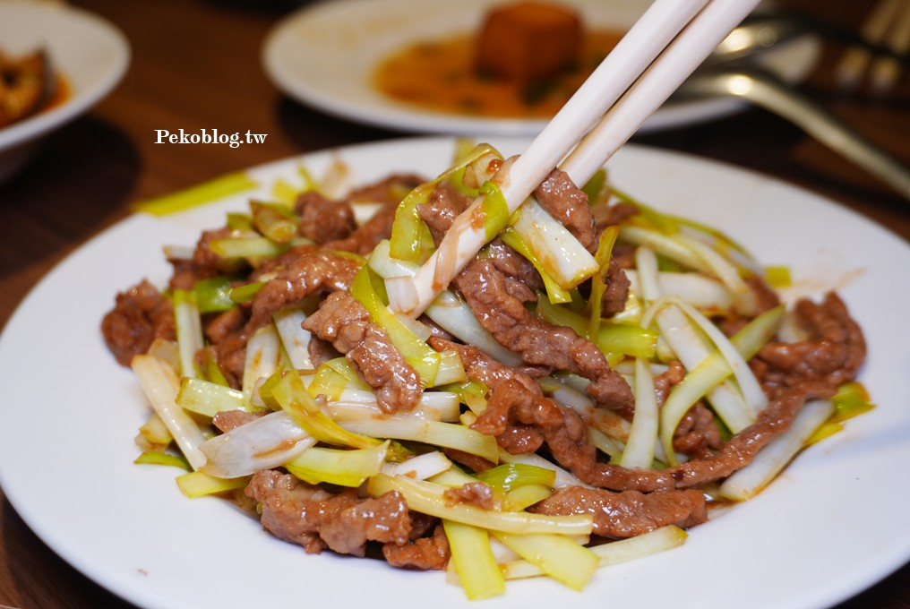

真川味｜西門町川菜老店：多人聚餐的點菜方向、地址與提醒

一句話摘要
想在西門町吃一桌適合多人分食、辣度可調整的川菜，真川味可列入口袋名單；建議 4 人以上、先確認當日是否開二店與座位，點菜以一兩道香辣主菜搭配不辣菜、蔬菜／海鮮與湯鍋平衡。
文章重點
PEKO 的 2026 年 1 月更新指出，真川味創立於 1958 年，位於康定路 25 巷的「西門町川菜一條街」，距捷運西門站步行約 6–8 分鐘。店面走樸實路線，適合家庭或朋友聚餐；客滿時可能引導至對街的二店，二店通常在假日人潮較多時啟用。
文章提到菜單涵蓋冷盤、熱炒、肉類、蔬菜、豆腐、海鮮與火鍋。除海鮮、火鍋外，多數菜色約落在 200 元上下；作者建議最少 4 人、約 6 道菜起點，並提及用餐限時 90 分鐘。這些是食記作者的現場觀察，不是店家固定承諾。
可參考的點菜組合
- 香辣下飯主菜：宮保雞丁、五更腸旺、魚香茄子、蒼蠅頭。
- 不吃辣或同行有孩子：韭黃牛肉、糖醋排骨、老皮嫩肉、糖醋黃魚。
- 多人共享：三杯中卷、四季肥腸、炒蛤蜊、炸蚵酥。
- 收尾／平衡重口味：酸菜白肉鍋；文章稱湯可續，但應以現場規則為準。
- 搭配建議：梅干扣肉配銀絲卷是作者特別推薦的吃法。
文章列出的店家資訊
真川味 1 店
- 地址：台北市萬華區康定路 25 巷 42 之一號 1 樓
- 電話：02 2311 9908
- 文章列示營業時間：11:00–14:00、17:00–21:00
真川味 2 店
- 地址：台北市萬華區康定路 25 巷 39 之一號
- 電話：02 2388 0428
- 文章列示固定公休：週三、週四
- 文章列示營業時間：11:00–14:00、17:00–21:00
出發前提醒
- 營業時間、公休、二店是否開放、訂位規則與座位狀態請以電話或店家當日公告為準。
- 作者記錄 2026 年 1 月的開瓶費為每桌 200 元；費用可能變動，帶酒前先詢問。
- 川菜辣度可客製化是文章描述，點餐時仍直接說明「不辣／小辣／中辣」及同行者需求。
- 餐點評價、份量與價格是作者的個人經驗；若有飲食限制或過敏，先向店家確認食材與烹調方式。